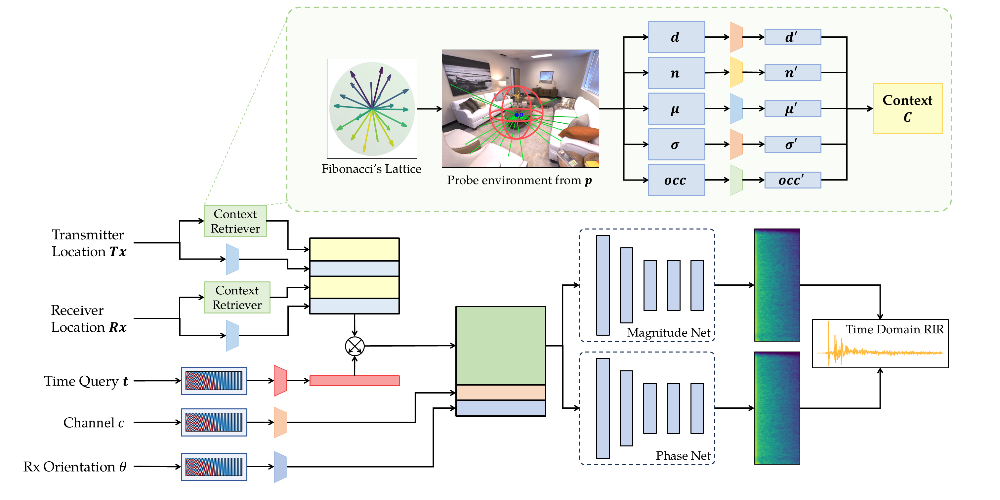

1 UC San Diego 2 Monash University 3 University of Illinois Urbana-Champaign
Realistic sound simulation plays a critical role in many applications. A key element in sound simulation is the room impulse response (RIR), which characterizes how sound propagates within a given space. Recent studies have applied neural implicit methods to learn RIRs using context information collected from the environment, such as scene images. However, these approaches do not effectively leverage explicit geometric information from the environment.
To further exploit neural implicit models with direct geometric features, we present MiNAF (Mesh-infused Neural Acoustic Field), which queries a rough room mesh at given locations and extracts distance distributions as an explicit representation of local context. Our approach demonstrates that incorporating explicit local geometric features can better guide the model in generating more accurate RIR predictions. Through comparisons with conventional and state-of-the-art methods, we show that MiNAF performs competitively across various evaluation metrics — and remains robust even with limited training data and noisy or reconstructed meshes.
For each transmitter or receiver location, MiNAF casts N rays in uniformly distributed directions (Fibonacci lattice) and queries the room mesh for the point of first hit (PoFH) on each ray. From these ray–mesh interactions it gathers five explicit local features: per-ray distances d, surface normals n at each PoFH, proximity statistics (mean µ and standard deviation σ over neighboring rays), and a global occupancy histogram occ of all distances. The features are projected into a shared latent space, fused with sinusoidally encoded Tx/Rx positions, and element-wise embedded with the encoded time index. A simple MLP then predicts the log-magnitude and instantaneous-frequency (IF) spectra, from which the time-domain RIR is reconstructed via inverse STFT.

Workflow. A context retriever extracts physical features at the Tx and Rx locations, producing context vectors that are concatenated with encoded positions. The encoded time index is element-wise embedded into the combined context, which — along with channel and orientation embeddings — drives two identical MLPs predicting the log-magnitude and IF spectra.